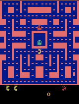

目录
环境搭建
Gym 环境
朴素 Q-Learning
Deep Q-Network
Double Q-Learning
Dueling Q-Network
Monte-Carlo Policy Gradient
Actor-Critic
参考文献
完整实现可在 lilianweng/deep-reinforcement-learning-gym 获取
在前两篇文章中，我介绍了许多深度强化学习模型的算法。现在是时候动手实践，在真实环境中实现这些模型了。本教程的实现基于 Tensorflow 和 OpenAI gym 环境。完整代码可在 [lilian/deep-reinforcement-learning-gym] 中找到。
环境搭建
请确保已安装 Homebrew：
/usr/bin/ruby -e "$(curl -fsSL https://raw.githubusercontent.com/Homebrew/install/master/install)"
我建议为开发创建一个 virtualenv。当你有多个项目且依赖冲突时（比如一个项目使用 Python 2.7，另一个只能在 Python 3.5+ 上运行），它能让生活轻松很多。
# Install python virtualenv
brew install pyenv-virtualenv
# Create a virtual environment of any name you like with Python 3.6.4 support
pyenv virtualenv 3.6.4 workspace
# Activate the virtualenv named "workspace"
pyenv activate workspace
[*] 每次进行以下新安装前，请确认你处于 virtualenv 环境中。
根据 官方说明 安装 OpenAI Gym。若只需最小化安装，可运行：
git clone https://github.com/openai/gym.git
cd gym
pip install -e .
如果你想玩 Atari 游戏或其他高级功能包，请继续安装一些系统依赖。
brew install cmake boost boost-python sdl2 swig wget
对于 Atari，请进入 gym 目录并用 pip 安装。如果你在安装 ALE（Arcade Learning Environment）时遇到问题，这篇 文章 非常有帮助。
pip install -e '.[atari]'
最后克隆“playground”代码仓库并安装依赖。
git clone git@github.com:lilianweng/deep-reinforcement-learning-gym.git
cd deep-reinforcement-learning-gym
pip install -e . # install the "playground" project.
pip install -r requirements.txt # install required packages.
Gym 环境
OpenAI Gym 工具包提供了一系列物理仿真环境、游戏和机器人模拟器，我们可以在其中设计和训练强化学习智能体。可以使用 gym.make("{environment name}") 来初始化一个环境对象：
import gym
env = gym.make("MsPacman-v0")
